Leads qualifizieren.
Vollautomatisch.
Der Lead-Gen Specialist überwacht eingehende Anfragen, bewertet sie nach Ihren Kriterien und trägt qualifizierte Leads direkt ins CRM ein.

Vertriebsteams verlieren täglich Stunden mit manueller Dateneingabe statt mit Verkaufen. Der Lead-Gen Specialist übernimmt die Qualifizierung vollautomatisch — damit Ihr Team sich auf das Wesentliche konzentrieren kann.
Drei Kernvorteile
Automatische Qualifizierung
Jede eingehende Anfrage wird sofort analysiert und nach Ihren Kriterien bewertet — ohne dass Ihr Team auch nur einen Klick machen muss.
→ Spart 8–12 Stunden pro Woche
Direkte CRM-Integration
Qualifizierte Leads landen automatisch in Ihrem CRM — vollständig ausgefüllt, priorisiert und sofort handlungsbereit.
→ Kompatibel mit HubSpot, Salesforce & Pipedrive
Intelligentes Alerting
Bei High-Priority Leads benachrichtigt der Agent Ihr Team sofort per Slack oder Email — damit keine wichtige Anfrage untergeht.
→ A-Leads erreichen Ihr Team in unter 5 Minuten
Ihr Tool nicht dabei? Wir integrieren uns in nahezu jeden Stack.
Wie es funktioniert
Der Agent in Aktion
Anfrage eingeht
Eine neue E-Mail oder ein ausgefülltes Kontaktformular wird vom Agenten automatisch erkannt und zur Verarbeitung entgegengenommen.
Agent analysiert
Der Agent liest den Inhalt vollständig aus und extrahiert relevante Informationen wie Name, Unternehmen, Branche und konkrete Anforderung.
Lead qualifiziert
Basierend auf Ihren Kriterien bewertet der Agent den Lead und vergibt einen Score: A (hoch), B (mittel) oder C (niedrig).
CRM-Eintrag erstellt
Der qualifizierte Lead wird vollständig ins CRM eingetragen. Bei A-Leads benachrichtigt der Agent Ihr Team sofort per E-Mail oder Slack.
Ergebnisse
Was Sie gewinnen
pro Woche gespart
bis Lead im CRM
Qualifizierungsgenauigkeit
Funktionen
Was der Agent für Sie tut
Automatische Extraktion
Erkennt und extrahiert Kontakt- und Unternehmensdaten aus eingehenden E-Mails und Web-Formularen — ohne manuelle Vorbereitung.
Qualifizierung nach Ihren Kriterien
Bewertet jeden Lead anhand Ihrer vorab definierten Kriterien wie Branche, Unternehmensgröße, Budget oder Anfrageart.
Lead-Scoring A / B / C
Vergibt klare Prioritäts-Scores und sortiert Leads nach Abschlusswahrscheinlichkeit — Ihr Team arbeitet die richtigen Leads zuerst.
CRM-Integration
Nahtlose Anbindung an HubSpot, Salesforce und Pipedrive — Leads landen vollständig ausgefüllt direkt im richtigen System.
Duplikat-Check
Prüft automatisch, ob ein Lead bereits im CRM vorhanden ist, bevor ein neuer Eintrag erstellt wird — keine doppelten Kontakte mehr.
Sofort-Benachrichtigung bei A-Leads
Bei einem A-Lead wird Ihr Vertriebsteam unmittelbar per E-Mail oder Slack benachrichtigt — damit kein heißer Kontakt warten muss.
Bereit für automatische Lead-Qualifizierung?
Lassen Sie uns besprechen, wie der Agent in Ihren Vertriebsprozess passt — und wie viel Zeit Sie wirklich sparen.
Jetzt anfragen →15 Min · Kostenlos · Unverbindlich